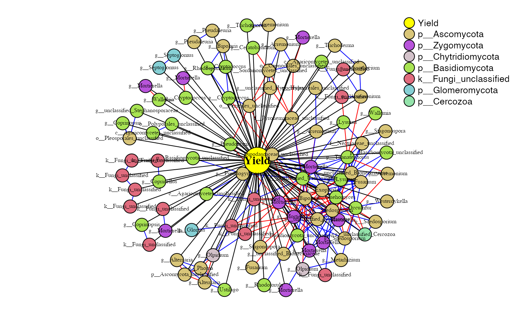
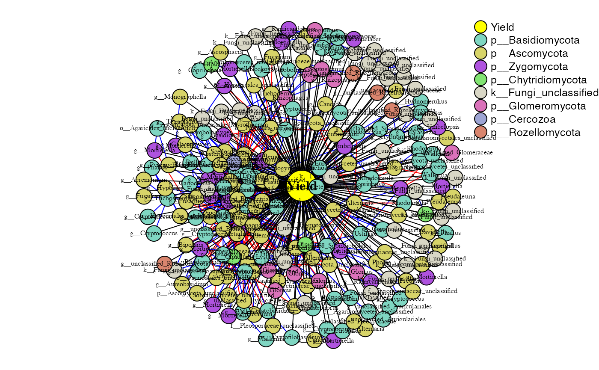

PhONA.RmdPhONA provides a framework to select a testable and manageable number of OTUs to support microbiome-based agriculture.
# installation
# library(devtools)
# devtools::install_github("ravinpoudel/PhONA", build_vignettes = TRUE, force = TRUE, auth = "5c5decd148f0378dcb762e7b14c3d1508ef49ba2")
# Browse Vignettes to see the output as below.
# browseVignettes("PhONA")###### Load the data phyobj <- readRDS(system.file("extdata", "physeqobject.rds", package = "PhONA")) sparcc.cor <- read.delim(system.file("extdata", "cor_sparcc.out", package = "PhONA"), sep = "\t", header = T, row.names = 1) sparcc.pval <- read.delim(system.file("extdata", "pvals.txt", package = "PhONA"), sep = "\t", header = T, row.names = 1)
library(PhONA) PhONA( physeqobj = phyobj, cordata = sparcc.cor, pdata = sparcc.pval, model = "lm", iters=1, OTU_OTU_pvalue = 0.001, OTU_OTU_rvalue = 0.6, OTU_Phenotype_pvalue = 0.6, definePhenotype = "Marketable", defineTreatment = "Maxifort", coloredby = "Phylum", PhenoNodecolor = "yellow", PhenoNodesize = 20, PhenoNodelabel = "Yield", nodesize = 10, Pheno2OTUedgecolor = "black", netlayout = layout.fruchterman.reingold )
## Parsing Phyloseq Object## Done Parsing Phyloseq Object !!!!!## Creating network using association matrix## Association network created-- Done!!!## Creating assocication model## [1] 1## OTUs selected from linear regression## Creating PhONA## PhONA created -- Done !!!## Total time to run PhONA
## 12.984 sec elapsedlibrary(PhONA) PhONA( physeqobj = phyobj, cordata = sparcc.cor, pdata = sparcc.pval, model = "lasso", iters=2, OTU_OTU_pvalue = 0.001, OTU_OTU_rvalue = 0.6, OTU_Phenotype_pvalue = 0.6, definePhenotype = "Marketable", defineTreatment = "Maxifort", coloredby = "Phylum", PhenoNodecolor = "yellow", PhenoNodesize = 20, PhenoNodelabel = "Yield", nodesize = 10, Pheno2OTUedgecolor = "black", netlayout = layout.fruchterman.reingold )
## Parsing Phyloseq Object## Done Parsing Phyloseq Object !!!!!## Creating network using association matrix## Association network created-- Done!!!## Creating assocication model## [1] 2## Running Iteration Number::1## Waiting for profiling to be done...## Running Iteration Number::2## Waiting for profiling to be done...## Unique OTUs selected from lasso regression## Creating PhONA## PhONA created -- Done !!!## Total time to run PhONA
## 17.097 sec elapsed